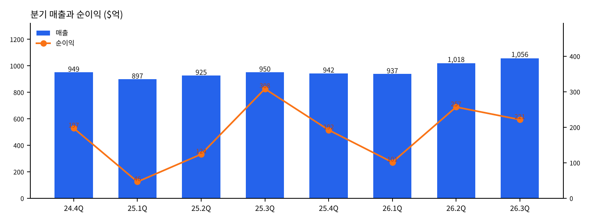
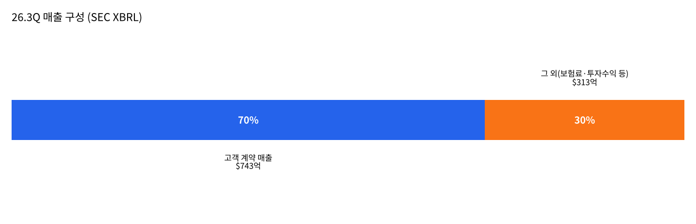
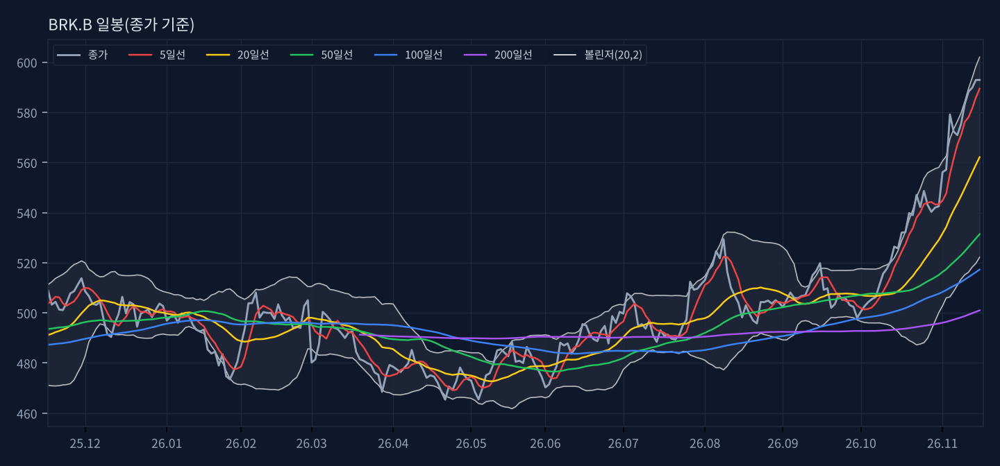
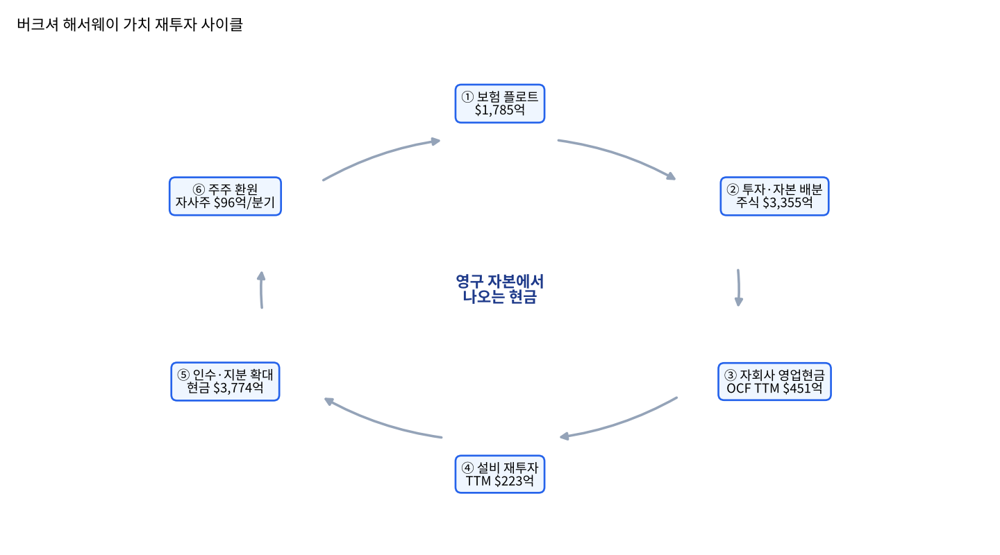

버크셔 해서웨이는 워런 버핏이 일군 미국의 복합기업이다. 자동차보험(GEICO)·재보험, BNSF 철도, 에너지 유틸리티, 제조·소매 자회사를 직접 소유하고, 거기서 나오는 돈으로 상장주식(애플 등 대형주)과 현금성 자산을 굴린다. 보험료를 먼저 받고 보험금은 나중에 내는 구조에서 생기는 플로트(보험 부채성 자금) $1,785억이 싼 투자 재원이다.
| 항목 | 내용 |
|---|---|
| 종목 | Berkshire Hathaway Inc. (BRK.B 클래스 B) · NYSE · 본사 네브래스카 오마하 |
| 밸류에이션 | PER 16.6배 · P/B 1.66배 (2026.11.16 종가 $592.85, 클래스 A는 $878,000 상회) |
| 최근 분기(26.3Q) | 매출 $1,056억, 순이익 $221억, 영업이익 $127.1억, 주당(B주 환산) 순이익 $10.33 · 영업이익 $5.93 |
| 자본 | 현금 $3,774억, 보유 주식 $3,355억, 플로트 $1,785억, B주 환산 주당 장부가 $357.73 |
| 사업 부문 | 보험(GEICO·재보험), BNSF 철도, 버크셔 해서웨이 에너지, 제조·서비스·소매, 투자 |
| 직책 | 인물 | 역할·특징 |
|---|---|---|
| CEO | 그레그 에이블 | 2026년 1월 취임. 에너지·비보험 사업 총괄 출신으로 승계된 인물 |
| 이사회 의장 | 하워드 버핏 | 2026년 9월부터 의장. 워런 버핏의 아들 |
| 명예 의장 | 워런 버핏 | 의장직에서 물러나 명예 의장. 오랜 자본 배분 철학의 설계자 |
경영 스타일: 분권 경영과 영구 보유. 자회사는 각자 경영진이 운영하고 본사는 자본 배분만 맡는다. 좋은 가격이 아니면 사지 않기 때문에 현금이 쌓이는 해가 많다. 자사주는 가격이 합리적일 때만 사며, 이번 3분기에 다시 매입을 늘렸다(분기 $96억, 10월 약 $20억).
회사 차원의 단일 기술 플랫폼이 아니라 BNSF·에너지·GEICO 같은 사업이 각자 기술을 쓴다. 이번 분기 알파벳 AI 관련 $100억 투자가 눈에 띈다.
좋은 사업은 사서 팔지 않고 현금흐름을 다시 투자한다. 최근에는 Bending Spoons에 $9.3억을 투자해 소프트웨어 영역으로도 넓혔다.
다음 실적발표는 세 가지 질문에 답하는 자리다.
1. GEICO 중심의 보험 인수이익이 회복되나?
2. 쌓인 현금 $3,774억이 실제 투자로 움직이나?
3. 영업이익이 감소에서 벗어나나?
한 줄 판정 규칙: 첫 번째 질문(합산비율)이 개선되면 보험 고리가 가장 먼저 풀린다. 두 번째 질문은 큰 투자 발표 여부로 판단한다.
일정: 다음 실적발표는 트레이딩뷰 추정 2027.02.22(회사 확정 일정은 확인 필요). 3분기 보고서 기준 가이던스는 없다.
| 분기 | 매출 | 세전이익 | 순이익 | 영업현금흐름 | 설비투자 | EPS | 조정 EPS | 특이 사항 |
|---|---|---|---|---|---|---|---|---|
| 24.4Q | $949억* | $240억* | $197억* | $46억* | $53억* | $9.13 | $6.74 | |
| 25.1Q | $897억 | $51억 | $46억 | $109억 | $43억 | $2.13 | $4.47 | 순이익 최저(투자 평가손) |
| 25.2Q | $925억 | $148억 | $124억 | $101억* | $49억* | $5.73 | $5.17 | |
| 25.3Q | $950억 | $381억 | $308억 | $138억* | $56억* | $14.28 | $6.26 | 순이익 최고(투자 평가익) |
| 25.4Q | $942억* | $245억* | $192억* | $112억* | $62억* | $8.90 | $4.73 | |
| 26.1Q | $937억 | $123억 | $101억 | $104억 | $50억 | $4.68 | $5.25 | |
| 26.2Q | $1,018억 | $321억 | $257억 | $112억* | $56억* | $11.91 | $6.02 | |
| 26.3Q | $1,056억 | $271억 | $221억 | $123억* | $55억* | $10.33 | $5.93 | 영업이익 $127.1억(-5.8%), 순이익 -28% |
EPS는 B주 환산 GAAP 주당순이익, 조정 EPS는 영업이익(투자손익 제외) 기준 B주 환산 주당(트레이딩뷰 Reported)이다. *는 연간 − 1~3분기 합 또는 누적 차이로 구한 근사치다. 설비투자는 유형자산 취득(PP&E) 기준이다.

흐름 요약: 분기 매출은 $897억~$1,056억 사이에서 늘고 있다(26.3Q가 8분기 중 최대). 순이익은 보유 주식 평가손익에 따라 25.1Q $46억에서 25.3Q $308억까지 널뛰므로 영업이익이 본업의 지표다. 주당 영업이익은 8분기 동안 $4.47~$6.74 범위이며, 최근 4분기 합 $21.93은 직전 4분기 $22.64보다 3.1% 낮다.
| 구분 | 돈을 버는 방식 | 26.3Q | 비중 |
|---|---|---|---|
| 고객 계약 매출 | 철도 운임, 에너지 요금, 제조·서비스·소매 판매(회계상 "고객과의 계약 매출") | $743억 | 70% |
| 그 외 수익 | 보험료, 이자·배당 등 투자수익, 투자 평가·매각 손익 | $313억 | 30% |

SEC XBRL 기준 26.3Q 매출 $1,056억 중 고객과의 계약 매출이 $743억(70%)이다. 부문별(보험·BNSF·에너지·제조) 매출·이익 숫자는 이 양식에서 확인되지 않아 생략했다. 3분기 확인된 부문 단서는 보험 인수이익 $13.5억(-43%)과 BNSF 증가율 +19.3%(보도 기준)뿐이다.
버크셔의 목적은 "영구 자본으로 오래 복리를 만드는 것"이다. 보험으로 모은 돈과 자회사 현금을 최고의 사업·주식에 다시 넣는다.
| 축 | 내용 |
|---|---|
| 플로트 활용 | 보험 플로트 $1,785억을 투자 재원으로 사용 |
| 자회사 현금흐름 | BNSF·에너지·제조에서 나오는 현금을 본사가 재배분 |
| 인수·지분 확대 | 좋은 가격일 때 사업 전체 또는 주식을 매수. 가격이 없으면 현금 보유 |
| 자사주 | 가격이 합리적일 때만 매입. 3분기 $96억 |
| 승계 | 그레그 에이블 CEO 체제로 이전, 하워드 버핏 의장 |

| 이동평균 | 값 | 종가 대비 | 위치 |
|---|---|---|---|
| 5일선 | $589.42 | +0.6% | 종가 위 |
| 20일선 | $562.12 | +5.5% | 종가 위 |
| 50일선 | $531.40 | +11.6% | 종가 위 |
| 100일선 | $517.28 | +14.6% | 종가 위 |
| 200일선 | $501.00 | +18.3% | 종가 위 |
2026년 4월 저점 $464(52주 저가)에서 $500 안팎 박스권을 오래 거친 뒤 10월부터 급등해 50·100·200일선을 모두 위로 벗어났다. 종가 $592.85는 52주 고가($596.9, 11월 13일)보다 0.7% 아래다.
| 규칙 | 기준 | 현재 값 | 신호 |
|---|---|---|---|
| 장기 추세 필터 | 종가 vs 200일선 | $592.90 > $501.00 | 매수 |
| 중장기 교차 | 50일선 vs 200일선 | $531.40 > $501.00 | 매수 |
| 단기 교차 | 20일선 vs 50일선 | $562.12 > $531.40 | 매수 |
| 돈키언 채널 | 55일 고가 $596.90 / 저가 $496.00 | 중간값 $546.45 위 | 매수 |
| 1개월 모멘텀 | 21거래일 수익률 | +11.4% (기준 $532.00) | 매수 |
| 3개월 모멘텀 | 63거래일 수익률 | +17.9% (기준 $503.00) | 매수 |
| 6개월 모멘텀 | 126거래일 수익률 | +21.4% (기준 $488.40) | 매수 |
| 12개월 모멘텀 | 252거래일 수익률 | +15.5% (기준 $513.10) | 매수 |
| 종합 (8개 평균) | +1.00 | 강한 매수 |
해석: 매수 신호 8개(장기 추세 필터, 중장기 교차, 단기 교차, 돈키언 채널, 1개월 모멘텀, 3개월 모멘텀, 6개월 모멘텀, 12개월 모멘텀), 매도 신호 0개(없음). 합계 +1.00이다. 단기 이동평균이 장기선보다 크게 위에 있어 추세는 강하지만, 20일선($562.1) 대비 5.5%, 200일선 대비 18% 올라 단기 이격이 크다. 14일 ATR $11.46 (1.9%), 52주 고가 $596.90 · 저가 $464.00.
| 가격 | 기준 | 무엇이 바뀌나 |
|---|---|---|
| $596.90 | 55일 고가 | 돌파 시 채널 상단 갱신 |
| $546.45 | 돈키언 중간값 | 55일 채널 중간값 위/아래로 신호가 바뀜 |
| $532.00 | 1개월 모멘텀 기준가 | 종가가 이 가격 위면 1개월 신호 매수 |
| $513.10 | 12개월 모멘텀 기준가 | 종가가 이 가격 위면 12개월 신호 매수 |
| $503.00 | 3개월 모멘텀 기준가 | 종가가 이 가격 위면 3개월 신호 매수 |
| $501.00 | 200일선 | 종가가 이 선 위/아래인지로 장기 추세 신호가 바뀜 |
| $496.00 | 55일 저가 | 이탈 시 채널 하단 갱신 |
| $488.40 | 6개월 모멘텀 기준가 | 종가가 이 가격 위면 6개월 신호 매수 |
가격 수준은 신호가 바뀌는 기준선일 뿐 진입·청산 가격 제안이 아니다. 20일/50일 교차는 이동평균 자체가 움직여 단일 가격으로 표시하지 않았다. 일봉·주봉은 종가 기준 직접 계산(고저 데이터 미사용)이다.
| 악재 요인 | 내용 | 강도 |
|---|---|---|
| 보험 인수이익 둔화 | 3분기 보험 인수이익 -43%, GEICO 합산비율 91.4%(전년 84.3%) | 중간 |
| 영업이익 감소 | 26.3Q 영업이익 -5.8%. 주당 영업이익 TTM -3.1% | 중간 |
| 순이익 변동성 | 보유 주식 $3,355억의 평가손익이 GAAP 순이익을 흔든다. 3분기 순이익 -28% | 중간 |
| 유휴 현금 | 현금 $3,774억에 비해 집행(자사주 3분기 $96억 등)이 작음 | 중간 |
| 승계 체제 | 2026년 1월 CEO·9월 의장 교체. 새 체제의 자본 배분 실적은 아직 짧음 | 참고 |
| 티커 | 회사 | PER(TTM) | PEG | P/S | EPS 성장(YoY) |
|---|---|---|---|---|---|
| BRK.B | 버크셔 해서웨이 | 16.6배 | 1.14 | 3.21배 | +15% |
| CB | 처브 | 13.3배 | 0.68 | 2.36배 | +19% |
| TRV | 트래블러스 | 10.6배 | 0.21 | 1.74배 | +50% |
| PGR | 프로그레시브 | 12.0배 | 1.35 | 1.50배 | +9% |
| AIG | AIG | 13.5배 | 1.37 | 1.58배 | +10% |
| ALL | 올스테이트 | 6.1배 | 0.14 | 0.97배 | +43% |
비교 결론: PER 16.6배는 손해보험 피어(6.1~13.5배)보다 높고, P/S 3.21배는 피어(0.97~2.36배)의 약 2배다. 버크셔는 철도·에너지·제조와 대규모 투자 포트폴리오를 함께 가진 복합기업이라 순수 보험사와 단순 비교하기 어렵다. TTM 순이익에는 투자 평가익이 섞여 있어, PEG 1.14도 그 영향을 받는다.
버크셔는 적자 기업이 아니다(최근 4분기 순이익 $771억). 런웨이 개념은 맞지 않고, 대신 현금·플로트·장부가로 자본력을 본다.
| 지표 | 값 | 의미 |
|---|---|---|
| 현금·단기자산 | $3,774억 | 2026.9.30 기준. 투자 대기 자금 |
| 보험 플로트 | $1,785억 | 먼저 받은 보험료에서 나오는 투자 재원 |
| 보유 주식(시가) | $3,355억 | 평가손익이 순이익에 직접 반영 |
| B주 환산 주당 장부가 | $357.73 | P/B 1.66배 ($592.85 ÷ $357.73) |
| 자사주 매입 | 3분기 $96억 + 10월 약 $20억 | 가격이 합리적일 때만 매입하는 회사 |
| 기준 | 매출 | P/S | 비고 |
|---|---|---|---|
| 트레이딩뷰 | – | 3.21배 | 철도·에너지·제조 매출에 보험·투자수익 포함 |
| SEC 매출 TTM (참고) | $3,954억 | – | 25.4Q~26.3Q 합(25.4Q는 근사치) |
| 손해보험 피어 평균(CB·TRV·PGR·AIG·ALL) | – | 약 1.63배 | 2.36 / 1.74 / 1.50 / 1.58 / 0.97 |
해석: 버크셔의 P/S는 보험 피어의 약 2배다. 매출 안에 철도·에너지·제조가 있어 매출당 이익 구조가 다르고, 이익 대비 평가는 P/B 1.66배와 PER 16.6배로 보는 편이 맞다. 장부가가 매년 늘어나는 동안 P/B가 유지되는지가 핵심이다.
보험·철도·에너지·투자를 합친 복합기업이라 EBITDA는 해석이 어렵다. 대신 영업이익(투자손익 제외)과 영업현금흐름을 쓴다.
| 지표 | 값 | 산출 |
|---|---|---|
| 세전이익 (TTM) | $960억 | 25.4Q~26.3Q 합(투자손익 포함) |
| 주당 영업이익 (TTM) | $21.93 | 분기 $4.73 + $5.25 + $6.02 + $5.93 |
| 영업이익 총액 (추정) | 약 $472억 | $21.93 × B주 환산 약 21.5억 주 (내 가정) |
| 영업현금흐름 (TTM) | $451억 | SEC 합계 |
| 설비투자 (TTM) | $223억 | 유형자산 취득 |
| 잉여현금(OCF − 설비투자) | 약 $228억 — 흑자 | $451억 − $223억 |
| 방식 | PER | EPS 성장률 | PEG | 판정 |
|---|---|---|---|---|
| 트레이딩뷰 (TTM 순이익 기준) | 16.6배 | +14.6% | 1.14 | 기준 초과 |
| 영업이익 기준 (투자손익 제외) | 약 27.0배 ($592.85 ÷ $21.93) | -3.1% ($22.64 → $21.93) | 산출 불가 | 성장 마이너스 |
판정: 트레이딩뷰 PEG 1.14 → 기준 초과(1.0 초과, 투자 적격 아님). TTM 순이익 증가에는 보유 주식 평가익이 섞여 있다. 투자손익을 제외한 주당 영업이익은 오히려 3.1% 줄었기 때문에 조정 PEG는 계산하지 않고 "산출 불가"로 둔다. 영업이익 기준 PER은 약 27배로 표면 PER 16.6배보다 높다(내 계산).

버크셔 사이클의 중심은 보험 플로트와 자회사 영업현금이다. 받아둔 돈을 투자·인수에 쓰고, 그 결과가 다시 이익과 플로트를 키운다.
| 고리 | 현재 숫자 | 고리 강도 | 약해지는 신호 |
|---|---|---|---|
| ① 보험 플로트 | $1,785억, 3분기 인수이익 -43% | 약해짐 | 합산비율 상승(GEICO 91.4%) |
| ② 투자·자본 배분 | 주식 $3,355억, 알파벳 AI $100억 | 강함 | 평가손실, 좋은 투자처 부족 |
| ③ 자회사 영업현금 | 영업현금흐름 TTM $451억 | 강함 | 철도·에너지 이익 둔화 |
| ④ 설비 재투자 | 설비투자 TTM $223억 | 진행 중 | 투자 대비 수익 둔화 |
| ⑤ 인수·지분 확대 | 현금 $3,774억 대기 | 진행 중 | 현금만 늘고 인수가 없음 |
| ⑥ 주주 환원 | 자사주 3분기 $96억 | 재개 | 매입 중단 |
사이클의 특징: 버크셔 사이클은 호황·불황과 무관하게 현금이 쌓이는 방향으로 돈다. 약한 고리는 ①이다. 보험 수익성이 줄면 플로트가 싼 자금의 성격을 잃는다.